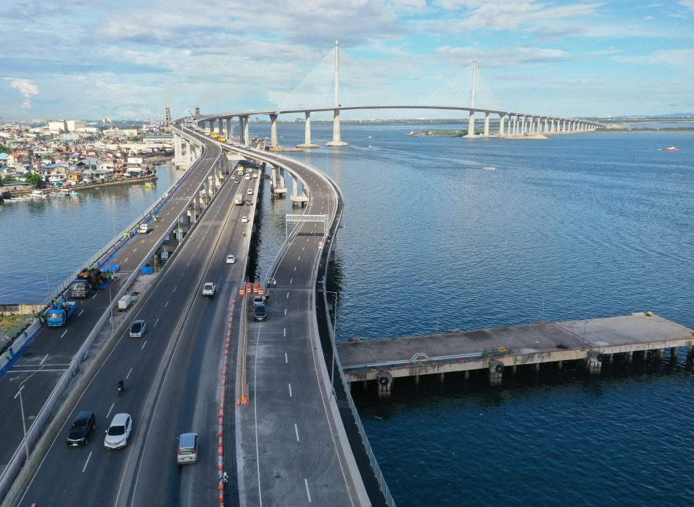
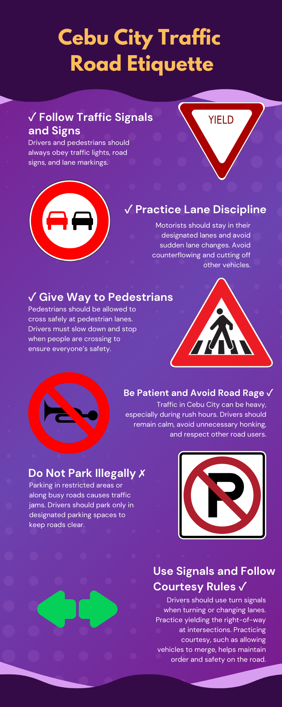

WHY IS CEBU'S TRAFFIC SO BAD?
Did you know that the CSCR (SRP) handles 75,000 vehicles daily?
According to Magsumbol (2024), there are said to be more than 74,000 traffic violations recorded in Cebu City by the Cebu City Transportation Office (CCTO), which implies that these violations could significantly affect the flow of traffic and overall safety in roads. Violations such as counterflowing, "beating the red light", and illegal U-turns disrupt the flow of traffic, making it inconvenient for many drivers to get from point A to point B. Aside from violations related to driving, the misuse of road space for parking or random loading/unloading of passengers is a common theme in the roads of Cebu City. In essence, the traffic is not solely caused by the abundance of vehicles in the road, but is also a result of a system in which rules are treated as mere suggestions rather than mandatory.
Who is Our Target Audience?
This article is targeted towards regular drivers of various vehicles in Cebu City, including:
Private Car Owners
Public Transport
Motorcycle Riders
What is the Purpose of this Webpage?
The purpose of this webpage is to spread awareness to vehicle owners on the current state of the roads in Cebu City. It aims to encourage people to adopt a defensive driving mindset in order to keep roads safe. It also attempts to test and educate people on the proper road rules, so that more people can practice them in their daily lives.

Road Etiquette & Traffic Rules

Click to see more
Test Your Driving Knowledge
Are you road-ready?
Loading question...
0 / 20
Rating
Time taken: 00:00
Be Part of the Solution
Cebu's traffic isn't just an infrastructure problem; it is a crisis that starts with every person behind the wheel. Roads are not to blame when we violate the road regulations and treat them as mere suggestions. Real change starts with prioritizing the safety of the road instead of counterflowing to save a little time. Commit to being a respectful and disciplined driver: stay in your lane, respect the signs and traffic lights, and make everyone's driving experience better. The road should not be used as a competition for space, but rather a cooperative effort to keep them open and safe for everyone to use.
#DriveRightCebu #CoDriveCebu #DisciplinedCebuano #MoveCebuForward #RoadEtiquettePh
Watch Our Advocacy Video
See why road etiquette matters in our advocacy simulation.
Play Advocacy Video